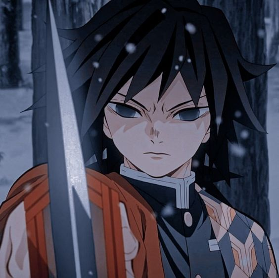
Utilizando a técnica de respiração da água, Tomioka tem o mesmo estilo de combate de Tanjiro, caracterizados por golpes precisos. Aliás, ambos aprenderam com o mesmo mestre: Sakonji Urokodaki.
Além das dez formas tradicionais de respiração da água, Tomioka criou uma 11ª forma. Essa técnica é utilizada contra o demônio Rui e consiste em manter completa tranquilidade, o que o garante velocidade imperceptível. 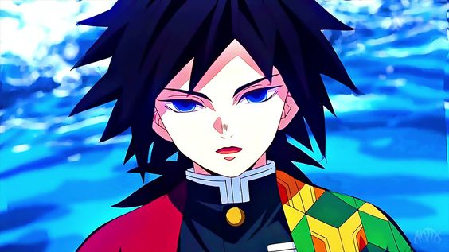
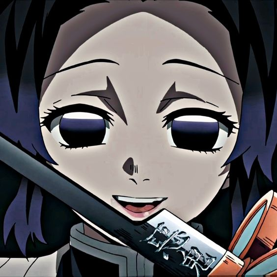
Shinobu, além de ser uma exímia espadachim, tem experiência médica que ela leva ao combate. Apesar de não ter a mesma força física de seus companheiros, ela é igualmente letal, utilizando uma lâmina mais fina coberta por um veneno mortífero.
Ela utiliza a agilidade superior para alvejar os oponentes com múltiplos golpes venenosos e, por fim, os matando como um Pilar do Inseto deveria. 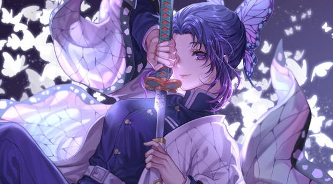
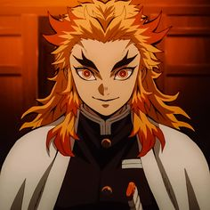
Rengoku utiliza a técnica da respiração das chamas (diferente da respiração especial de Tanjiro), que consiste em poderosos golpes feitos para incapacitar os oponentes.
O entusiasmado rapaz é protagonista do filme Mugen Train e principal aliado de Tanjiro nesse arco sequencial da primeira temporada. Quem assistiu garante: a história do Hashira é de emocionar, afinal, nem tudo são flores no mundo de Demon Slayer. 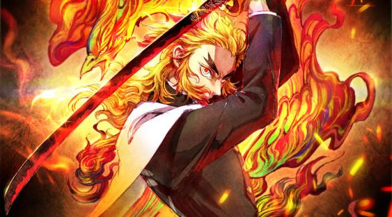
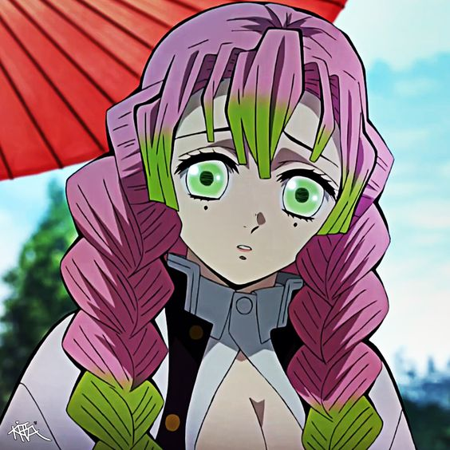
Caracterizada pelos cabelos rosados com pontas verdes e uma personalidade apaixonada, Mitsuri é uma pessoa tímida. Em combate, ela usa a técnica de respiração do amor, que dispara chicotadas.
Misturando agilidade, força e uma espada inusitada capaz de se estender e se retrair, a Hashira apresenta versatilidade e pode surpreender. Ao lado do Hashira da Névoa, Mitsuri será parte fundamental da trama da recém-confirmada terceira temporada. 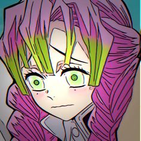
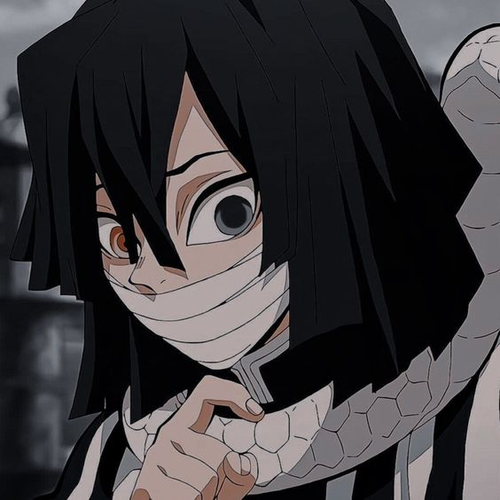
O jovem Obanai é um excelente espadachim que, apesar de ser parcialmente cego do olho direito, não deixa os oponentes escaparem. Ele utiliza uma espada assimétrica da categoria cris, que remete ao corpo esguio de uma cobra.
E serpente é justamente a técnica de respiração que ele utiliza, um derivado da respiração da água dominada por Giyu e Tanjiro. Os métodos de combate se destacam por movimentos que confundem e surpreendem o inimigo, sem dar a ele uma chance de fuga. 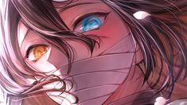
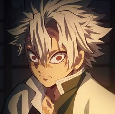
De visual excêntrico e explosivo, Sanemi utiliza a respiração do Vento, o que faz com que ele aja como um furacão no campo de batalha. Em uma das formas da técnica, por exemplo, ele avança para cima do oponente girando como um ciclone.
A respiração de Sanemi é caracterizada pela incessante cadência de golpes e, ironicamente, pouco espaço de tempo para que o oponente respire. Este personagem tem alguns segredos adicionais que deixarei de fora para evitar spoilers.
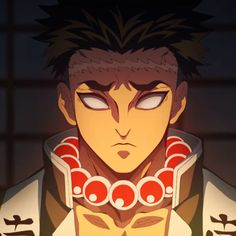
Gyomei se destacou entre os Hashiras por ser o maior do grupo e por aparecer chorando sem parar. Esse gigante gentil utiliza uma arma de correntes no melhor estilo kusarigama, a fim de compensar o fato de ser cego -- assim, ele consegue ouvir o som das correntes e utilizá-la mais efetivamente do que com uma espada.
O Hashira utiliza a respiração da rocha, que pode ser usada apenas em conjunto com armas da categoria que ele usa. A técnica é caracterizada por golpes pesados e uso do terreno para refletir e bloquear ataques. É conhecido como o Pilar mais forte do Esquadrão de Extermínio. 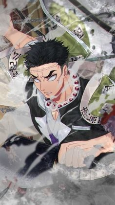
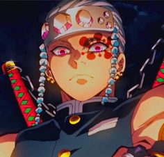
Tengen, notório pela tatuagem vermelha em torno do olho esquerdo, utiliza duas grandes espadas, maiores do que uma lâmina Nichirin comum, conectadas por uma corrente.
A respiração do som transforma o combate do Hashira em uma dança rítmica após ele analisar os padrões de sons por meio dos movimentos do oponente. Além disso, espere muito barulho, pois ele utiliza bombas para criar grandes explosões acompanhadas de estrondos sonoros. O Pilar é o grande destaque da segunda temporada do anime, que adaptou o arco do Distrito do Entretenimento. Extravagante, né? 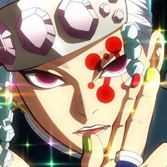
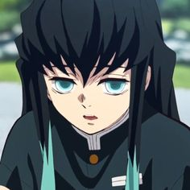
Muichiro é um introspectivo e distraído jovem espadachim. Ele, diferente de muitos dos Hashira mencionados acima, utiliza uma espada comum e alcançou o posto de Pilar da sociedade de extermínio em apenas dois meses de treinamento.
Abraçando a respiração da névoa, Muichiro foca em depravar os sentidos dos oponentes -- como a névoa faz. Assim, os golpes dele consistem em ataques velozes que deixam os inimigos sem saberem de onde a ferida veio. Como mencionado anteriormente, ao lado da Hashira do Amor, Muichiro será parte fundamental da trama da recém-confirmada terceira temporada. 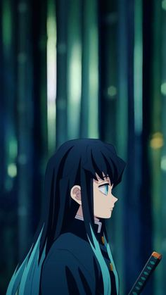